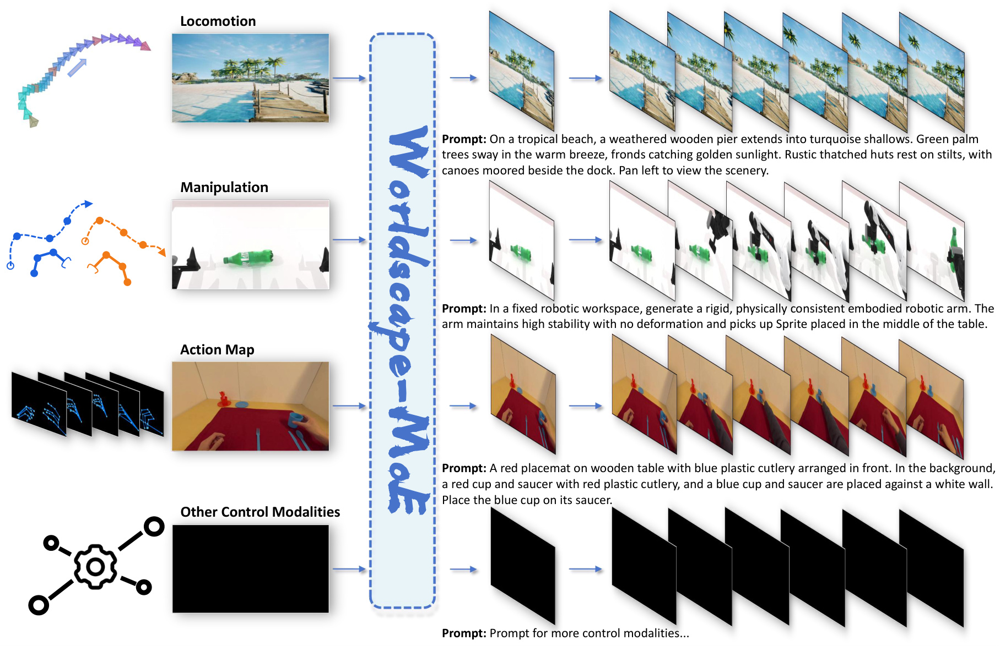

Abstract
With the rapid progress of interactive video generation, video generation world models have gradually emerged as one of the mainstream paradigms in world model research and are increasingly regarded as a promising path toward efficient intelligent agents. However, existing video generation world models are typically developed under different forms of control supervision and mainly focus either on interactive world modeling or embodied world modeling, leaving the compatibility of heterogeneous control signals largely unexplored. In this work, we introduce Worldscape-MoE, the first training framework that enables unified learning of world models under heterogeneous supervisory controls by incorporating a Mixture-of-Experts design into Diffusion Transformers. We further propose Worldscape-MoE Tuning, a continually extensible heterogeneous training strategy for world models, which supports diverse control signals, including robotic arms, hand joints, and camera poses, within a single world model and allows the model to be progressively expanded to new control settings. By enabling joint learning from more diverse data sources, this training strategy alleviates the scaling bottleneck of current world models. Our experiments show that world models trained with MoE over heterogeneous supervision consistently outperform those trained with any single control modality alone, demonstrating clear mutual gains across different control types. Worldscape-MoE achieves state-of-the-art performance on the WorldArena benchmark and shows particularly strong advantages in both locomotion and hand-motion capabilities over existing methods.
Contributions
01
We propose Worldscape-MoE, the first world model framework that Worldscape-MoE, within a unified architecture, enabling training on all available ego-centric world-modeling data and alleviating scaling bottlenecks caused by single-modality supervision.
02
We present Worldscape-MoE Tuning, a scalable training strategy that Worldsdape-MoE Tuning of additional control modalities while allowing the shared expert to continually absorb world knowledge across all controls.
03
Extensive experiments show clear positive transfer across different modalities in Worldscape-MoE, with each single-modality inference setting outperforming strong baselines.
Overview

Figure 1: Worldscape-MoE Overview. Worldscape-MoE supports three mainstream control modalities: Locomotion for trajectory-conditioned world navigation, Manipulation for robot-action-conditioned embodied tasks, and Action Map for hand-joint-conditioned egocentric interaction generation. The framework can also be extended to additional control injection settings.
Method
Worldscape-MoE unifies heterogeneous control signals in one diffusion-transformer world model by using a control-aware Mixture-of-Experts design. During training, each sample is routed through a shared expert plus the corresponding modality expert, enabling cross-modality world knowledge sharing and control-specific specialization at the same time.

Figure 2: Worldscape-MoE Architecture. Given the current world observation and different forms of supervisory control, our framework generates world dynamics under heterogeneous control signals. It supports both egocentric world exploration and embodied task execution.
Video Showcase
Out of Distribution
W/O MoE Comparison
Locomotion Comparison
Hand Motion Comparison
Physics Consistency
Loco-Hand Motion/Manipulation
Quantitative Results
Locomotion Experiments
| Method | Avg | Brightness | Color Temp | Sharpness | Motion | Smoothness | Trajectory Accuracy |
|---|---|---|---|---|---|---|---|
| Worldscape-MoE | 0.7556 | 0.6955 | 0.7758 | 0.7639 | 0.6745 | 0.9941 | 0.6300 |
| w/o MoE | 0.6869 | 0.6710 | 0.6993 | 0.6613 | 0.4865 | 0.9930 | 0.6100 |
| Matrix-game 3.0 | 0.6232 | 0.5633 | 0.6180 | 0.6353 | 0.3852 | 0.9660 | 0.5714 |
| HY-World 1.5 | 0.7322 | 0.7128 | 0.7027 | 0.7477 | 0.5545 | 0.9908 | 0.6844 |
| CameraCtrl | 0.5521 | 0.4602 | 0.4812 | 0.3076 | 0.4833 | 0.9832 | 0.5970 |
| MotionCtrl | 0.5562 | 0.4583 | 0.5296 | 0.2421 | 0.5182 | 0.9776 | 0.6115 |
| CamI2V | 0.6137 | 0.5150 | 0.5904 | 0.4513 | 0.5255 | 0.9886 | 0.6115 |
| RealCam-I2V | 0.7063 | 0.6530 | 0.5712 | 0.6197 | 0.6987 | 0.9901 | 0.7050 |
| VideoX-Fun-Wan | 0.7443 | 0.6684 | 0.6856 | 0.6640 | 0.6934 | 0.9899 | 0.7645 |
| AC3D | 0.7262 | 0.4884 | 0.7764 | 0.7050 | 0.7213 | 0.9934 | 0.6729 |
| ASTRA | 0.6072 | 0.5600 | 0.5916 | 0.5088 | 0.5625 | 0.9826 | 0.4379 |
Manipulation Experiments
| Model | EWM Score |
|---|---|
| Worldscape-MoE | 62.84 |
| w/o MoE | 61.88 |
| CtrlWorld | 59.98 |
| Wan 2.6 | 59.80 |
| CogvideoX | 58.79 |
| Veo 3.1 | 57.77 |
| IRASim | 56.14 |
| TesserAct | 54.62 |
| Cosmos-Predict 2.5 (action) | 54.29 |
| Cosmos-Predict 2.5 (text) | 53.06 |
| Vidar | 51.92 |
| Wan 2.2 | 51.71 |
| GigaWorld-0 | 50.96 |
| RoboMaster | 50.35 |
Hand Motion Experiments
| Model | FID-VID | FVD | FID |
|---|---|---|---|
| Worldscape-MoE | 3.80 | 110.94 | 5.78 |
| w/o MoE | 10.92 | 234.60 | 30.44 |
| HunyuanVideo-1.5 | 23.18 | 517.42 | 56.31 |
| Cosmos-Predict 2.5 | 15.02 | 628.96 | 51.36 |
| MimicMotion | 26.74 | 589.47 | 48.92 |
| MagicDance | 65.93 | 1498.65 | 91.78 |
| LOME | 144.58 | 1794.84 | 67.82 |
Visual Motion and Consistency Metrics
| Model | Image | Aesthetic | JEPA | Dynamic | Flow | Smoothness | Subject | Background | Photometric |
|---|---|---|---|---|---|---|---|---|---|
| Worldscape-MoE | 0.4566 | 0.3795 | 0.8920 | 0.4373 | 0.2632 | 0.7717 | 0.8333 | 0.9043 | 0.1439 |
| w/o MoE | 0.5220 | 0.4053 | 0.8779 | 0.4432 | 0.2457 | 0.7776 | 0.8282 | 0.8990 | 0.1126 |
| GigaWorld-0 | 0.5041 | 0.3991 | 0.4413 | 0.6709 | 0.3118 | 0.7811 | 0.7303 | 0.8563 | 0.1756 |
| TesserAct | 0.3322 | 0.4590 | 0.4579 | 0.5150 | 0.2447 | 0.7579 | 0.8250 | 0.9238 | 0.2491 |
| RoboMaster | 0.3487 | 0.3842 | 0.2966 | 0.6124 | 0.1484 | 0.6940 | 0.8295 | 0.9123 | 0.3356 |
| Vidar | 0.4145 | 0.4068 | 0.5608 | 0.2767 | 0.1426 | 0.7973 | 0.7629 | 0.8300 | 0.2350 |
| Cosmos-Predict 2.5 (text) | 0.6668 | 0.4501 | 0.3126 | 0.5911 | 0.4302 | 0.7882 | 0.7488 | 0.8511 | 0.1383 |
| Cosmos-Predict 2.5 (action) | 0.4489 | 0.3576 | 0.9296 | 0.3994 | 0.0573 | 0.7100 | 0.8197 | 0.8894 | 0.3528 |
| CtrlWorld | 0.3522 | 0.3893 | 0.9185 | 0.4257 | 0.3449 | 0.7377 | 0.8411 | 0.9057 | 0.1729 |
| Wan 2.2 | 0.3884 | 0.3963 | 0.7575 | 0.4349 | 0.1269 | 0.7019 | 0.8388 | 0.9042 | 0.4776 |
| CogvideoX | 0.3582 | 0.3777 | 0.9384 | 0.3166 | 0.2189 | 0.7391 | 0.8083 | 0.8773 | 0.3580 |
| IRASim | 0.3489 | 0.3623 | 0.9330 | 0.4139 | 0.2083 | 0.7052 | 0.8312 | 0.9068 | 0.3522 |
| Veo 3.1 | 0.6605 | 0.4632 | 0.5694 | 0.5450 | 0.1396 | 0.6989 | 0.7878 | 0.8710 | 0.3247 |
| Wan 2.6 | 0.6824 | 0.4433 | 0.7229 | 0.7421 | 0.4532 | 0.8539 | 0.7517 | 0.8687 | 0.1904 |
Physics and 3D and Controllability Metrics
| Model | Interaction | Trajectory | Depth | Perspectivity | Instruction | Semantic | Action |
|---|---|---|---|---|---|---|---|
| Worldscape-MoE | 0.8008 | 0.4610 | 0.9030 | 0.9686 | 0.9348 | 0.9039 | 0.0955 |
| w/o MoE | 0.7622 | 0.3540 | 0.9038 | 0.9744 | 0.8703 | 0.8914 | 0.0324 |
| GigaWorld-0 | 0.5368 | 0.1552 | 0.6316 | 0.7596 | 0.6156 | 0.8591 | 0.1134 |
| TesserAct | 0.5800 | 0.1396 | 0.7159 | 0.7920 | 0.6152 | 0.8783 | 0.0311 |
| RoboMaster | 0.5364 | 0.1158 | 0.8335 | 0.7588 | 0.5772 | 0.8761 | 0.0352 |
| Vidar | 0.5348 | 0.1928 | 0.7872 | 0.7592 | 0.5912 | 0.8826 | 0.0819 |
| Cosmos-Predict 2.5 (text) | 0.3872 | 0.0816 | 0.7051 | 0.7964 | 0.2664 | 0.7733 | 0.1418 |
| Cosmos-Predict 2.5 (action) | 0.5500 | 0.2945 | 0.8862 | 0.7644 | 0.5840 | 0.8879 | 0.0133 |
| CtrlWorld | 0.6212 | 0.4766 | 0.9300 | 0.7960 | 0.7272 | 0.8912 | 0.0210 |
| Wan 2.2 | 0.5184 | 0.1627 | 0.7768 | 0.7660 | 0.5376 | 0.8877 | 0.0512 |
| CogvideoX | 0.5940 | 0.3526 | 0.9097 | 0.7828 | 0.7268 | 0.8977 | 0.0076 |
| IRASim | 0.5656 | 0.3639 | 0.9312 | 0.7788 | 0.6604 | 0.8849 | 0.0526 |
| Veo 3.1 | 0.7872 | 0.1231 | 0.7421 | 0.8276 | 0.9328 | 0.8607 | 0.0852 |
| Wan 2.6 | 0.7280 | 0.1182 | 0.7144 | 0.8032 | 0.8536 | 0.8728 | 0.0992 |
Citation
@article{worldscape_moe_2026,
title = {Worldscape-MoE: A Unified Mixture-of-Experts Architecture for Scalable Multi-Control Video Generation World Modeling},
author = {Worldscape Team},
journal = {Under Review},
year = {2026}
}